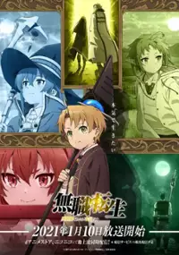
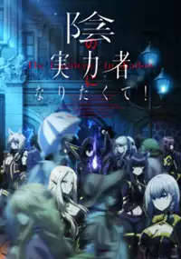

Najlepsze anime!
1) Mushoku Tensei.
Mushoku tensei to hisotria bezrobotnego 40 latka ktory zostaje potrącony przez busa i odradza sie w nowym swiecie.
>>Mushoku Tensei<<

2) Kage no Jutsuryokusha.
Kage no Jutsuryokusha opowiada o historii chlopaka który marzył by zostać eminencja w cieniu bohaterem ktorego nikt imienia nie zna.
